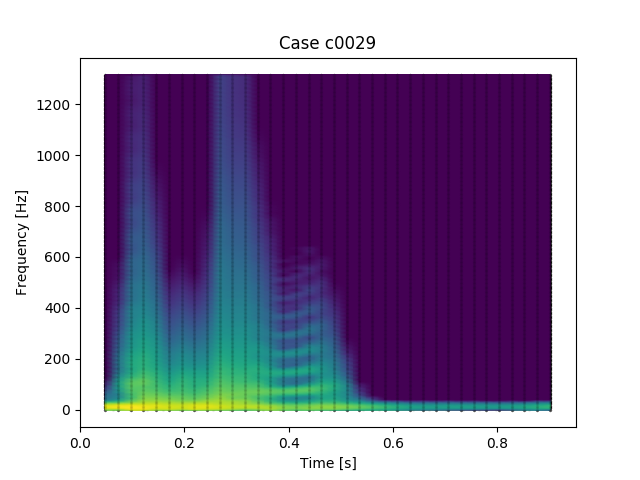
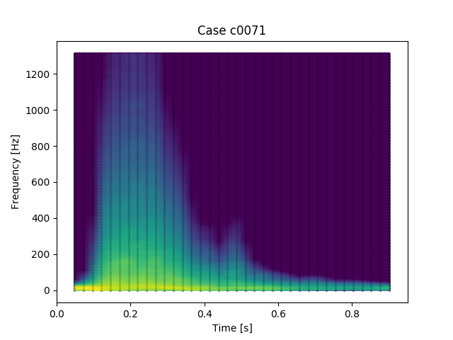
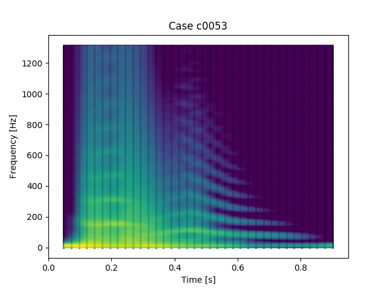

Multimodal Spectrograms
Hover over 3D model to rotate. Click play button to sonify
C0029

Your browser does not support the
audio
element.
C0071

Your browser does not support the
audio
element.
C0053

Your browser does not support the
audio
element.